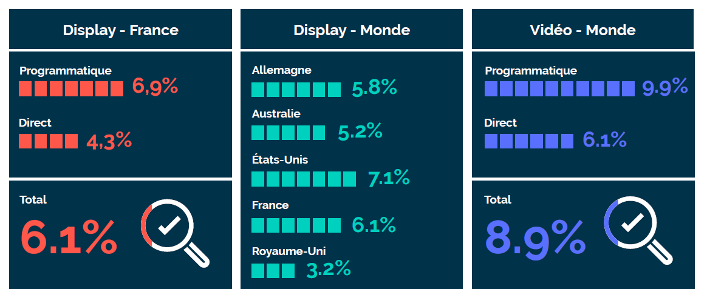
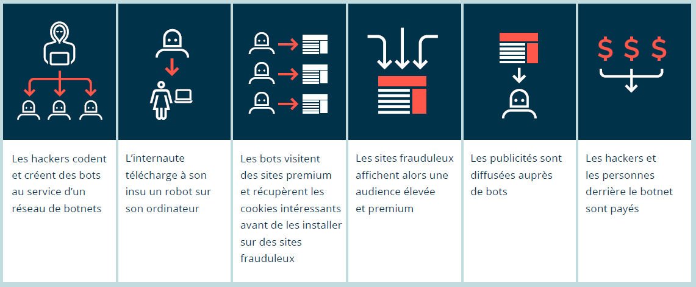
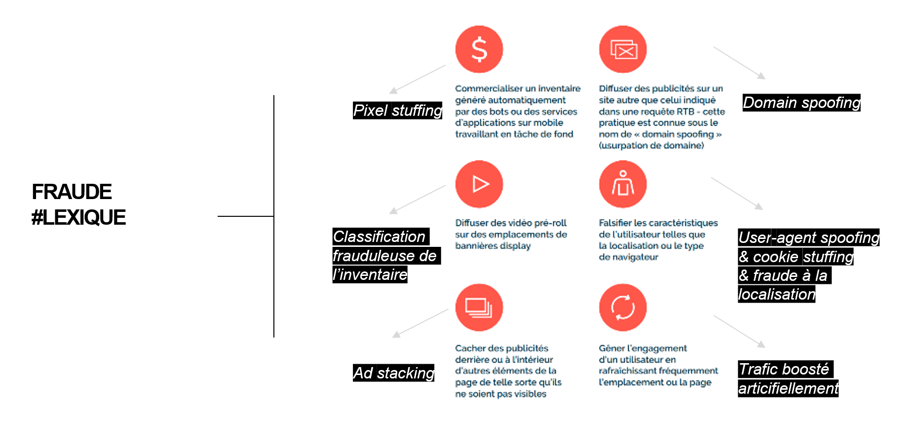
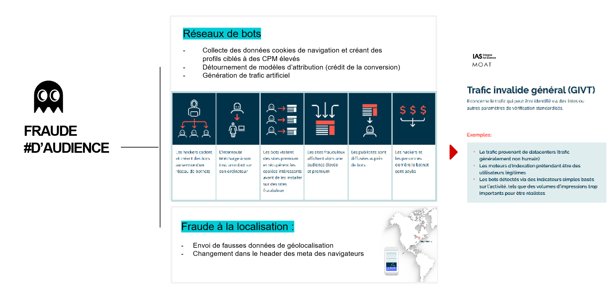
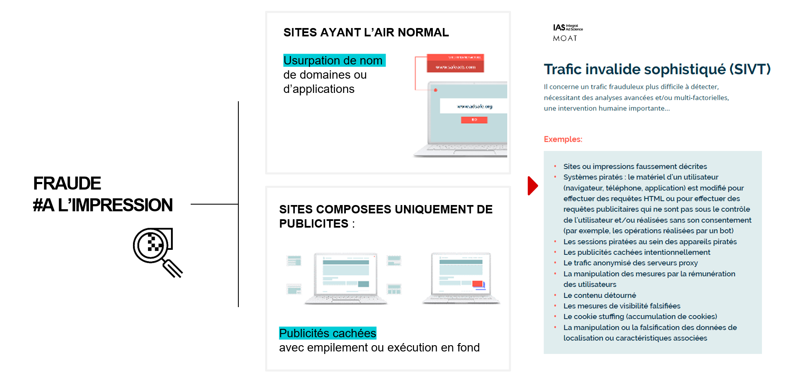
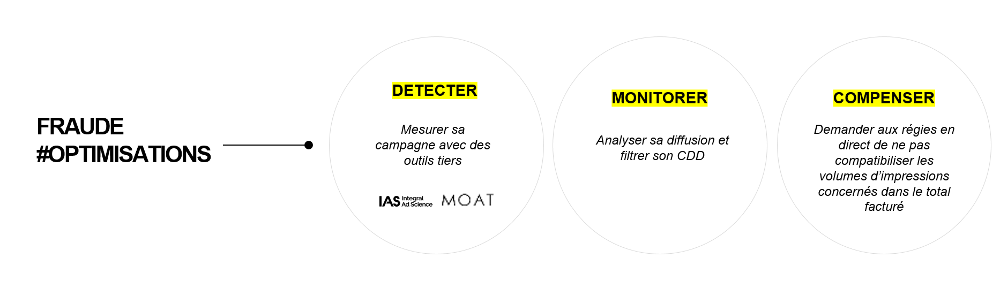
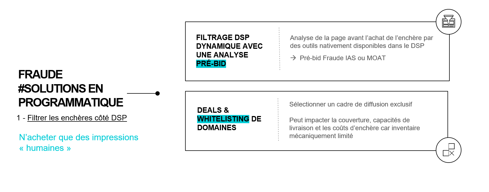
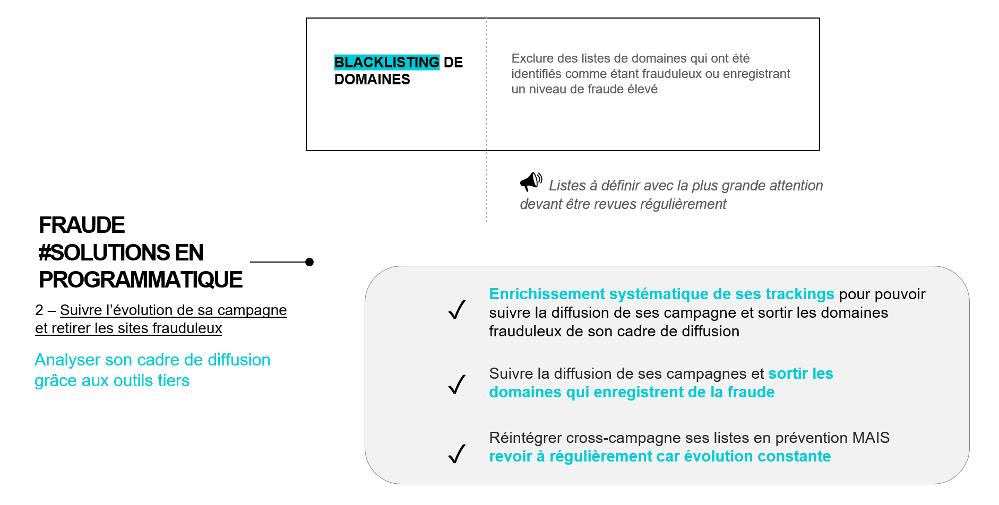
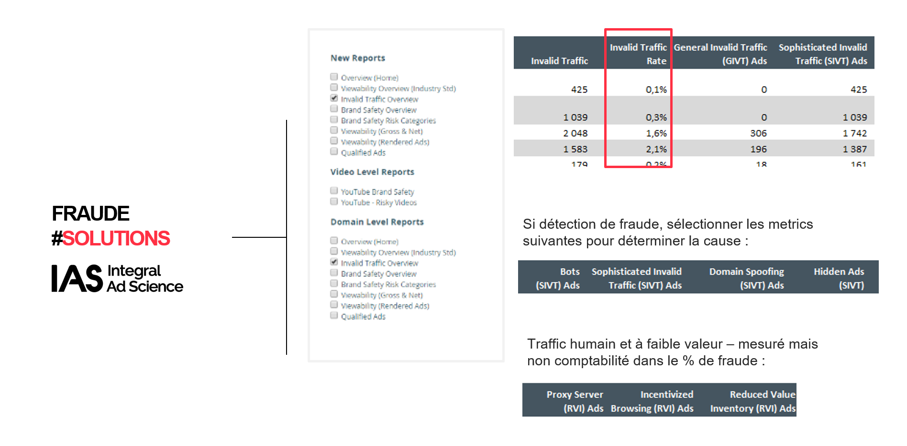
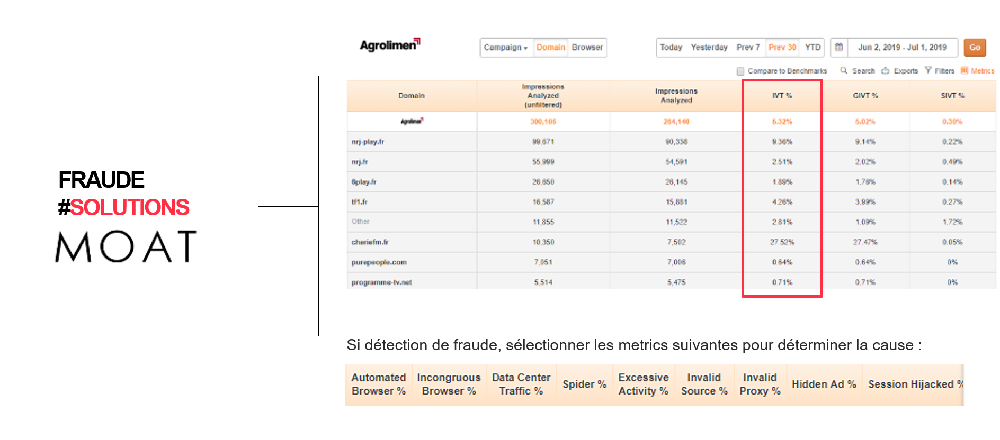

Challenge 2 : AD FRAUDE
"Sur les 4.6 milliards de dollars que coûte chaque année la fraude au secteur de la publicité digitale, 72% se concentre sur desktop et 28% sur mobile."
- Integral Ad Science
Mais qu'est que ça veut dire avoir de la fraude ?
Dans la publicitié digitale, lorsqu'une impression n'est pas délivrée à un internaute humain mais à un programme algorithmique, cela est considéré comme de la fraude. Ce programme que l'on appelle 'bot' , accède aux contenus de pages web à des fins frauduleuses.
Pour les marketeurs, cela signifie alors qu'une impression peut être achetée et servie mais sans pour autant ne jamais être en contact avec un vrai internaute. La fraude publicitaire porte atteinte à l’essence de la publicité qui est de diffuser le bon message, à la bonne personne (audience), au bon endroit (environnement). Il faut pouvoir identifier et contrôler la nature des cibles à qui sont servies les publicités. Il est donc important de pouvoir se donner les moyens de mesurer cette fuite de dépenses inutiles en implémentant les bonnes stratégies de tracking.


Qui se cache derrière ces robots qui ont forcément été programmés ?
La fraude est un phénomène complexe qui implique de nombreux acteurs : hackers, marchés noirs du logiciel, revendeurs de trafic et éditeurs ayant plus ou moins conscience de ce qui se passe. L'exemple le plus courant est celui d'un circuit où des bots scannent des pages web afin d'accumuler des cookies de navigation, leur créant ainsi des profils recherchés par les campagnes digitales des marketeurs, avant d'être actifs sur un des sites internet du fraudeur où les encarts de publicité sont achetés à prix d'or par les DSP.
En effet, il est très fréquent que les fraudeurs agissent comme de faux éditeurs, créant des sites internet contenant beaucoup de publicités ou volant du contenu d’autres pages, sans aucune intention d’attirer une véritable audience.
Les types de fraude les plus répandues sont le trafic non humain et l’usurpation de domaine (domain spoofing). Il est important de noter que différentes méthodes de fraude peuvent être combinées pour un effet maximum, et chaque impression peut présenter plusieurs types de fraude. Le trafic de bots peut créer des sources de revenu là où il n’y en avait pas auparavant et rend également plus difficile l’identification des personnes qui sont derrière.


Quelle est cette fraude dont les marketeurs sont victimes ?
Globalement, il y a donc trois types principaux de fraude dont les marketeurs doivent faire face aujourd'hui.
- La FRAUDE D'AUDIENCE : La plupart des malwares (logiciels malveillants) sont conçus avec la capacité de se joindre à un botnet (réseau de machines). Les moyens les plus courants d’infecter un ordinateur sont l’ouverture de pièces jointes, la navigation sur des liens dangereux ou encore l’installation de logiciels en provenance de sources non fiables. Au moment de l’infection, le malware transforme l’ordinateur en bot, un rouage dans un large réseau de machines infectées. Le bot commence à communiquer avec un serveur central qui lui donne des instructions à suivre. Cela peut consister à visiter de nombreux sites Premium dans le but de collecter des cookies définissant une cible intéressante pour les annonceurs. Le bot visite ensuite des faux sites et les publicités vues par ce bot sont une perte d’argent pour l’annonceur.
- La FRAUDE A L'IMPRESSION : Les fraudeurs agissent souvent comme de faux éditeurs, créant des sites internet contenant des publicités. Ces sites peuvent voler du contenu d’autres pages et apparaître comme des pages normales, ou les sites peuvent être uniquement constituées de publicités sans aucune intention d’attirer une véritable audience.
- La FRAUDE D'EXTENSION D'AUDIENCE : Dans le cadre de campagnes marketing vendues avec des volumes d'inventaires définis, il peut arriver que dans certains cas les éditeurs achètent du traffic afin de pouvoir délivrer la campagne avec les volumes et performances définis.



Mais alors comment lutter contre la fraude ?
Il faut déjà commencer par la comprendre ! Posez-vous la question de quelles sont les attaques dont vous êtes le plus fréquemment victimes. Cela passe par la mesure de votre traffic et de vos diffusions. Certains serveurs sont équipés nativement d'une technologie de détection mais il est rare que cela soit suffisant pour avoir une mesure exhaustive. Certains DSP permettent une option de pré-bid pour éviter d'avoir à enchérir sur des impressions qui seraient catégorisées comme étant frauduleuses. Un complément de mesure par un enrichissement d'un tracking tiers (IAS ou MOAT) vous permettra d'avoir une plus fine appréhension du problème.

1. CHOISIR SES ENCHERES : Optimiser depuis les serveurs d'achat, les DSP

2. DETECTER : Extraire les données et savoir les comprendre

3. MONITORER : Analyser les performances et mettre en place des optimisations des cadres de diffusion

